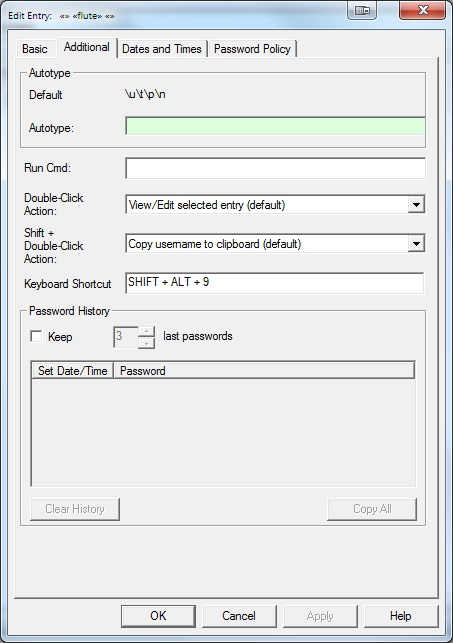

Password Safe allows you to keep the last few passwords that were used with a given entry, along with the date that they were set. This is useful to show compliance with password policies as required in some workplaces, and to revert to a previous password if a change did not take effect for some reason. An entry's password history is accessible via the "Additional" tab button in the Edit Entry dialog box.
You can control the following aspects of password history:
Clicking on a row in the list of recent passwords will copy the password displayed in that row to the clipboard.
Clicking on this button will clear the previous passwords stored with this entry.
Clicking on this button will copy the entire password history list (dates and passwords) to the clipboard.